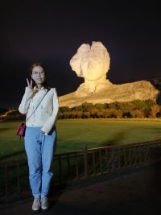

2018-9

汉阳造
在汉阳造里面，我们随处可见斑驳的石灰墙，以及硕大的窗户，还有一种高架的行车，里面还有很多的舞台以及摄影棚，包括里面的办公区，都透着一股工业加文艺的感觉，据说汉阳造里面已经有非常多的画室，许多画家们说，因为这里工业文明的遗产丰厚，在这里设的画师很能够激发创作灵感，而在这里也举办了很多次的画展，吸引了很多人前来观看，总的来说，汉阳造，这是一个非常适合悠闲散步，慢慢欣赏拍照的地方，足够你在自己失落的时候，或者不开心的时候，好好的欣赏一下，也许心情就会豁然开朗了！
2018-4

橘子洲头
橘子洲头被誉为"中国第一洲"，放眼望去，橘子洲头四周是宽阔的湘江，两岸高楼林立，岳麓山上一片葱绿。站在橘子洲头，让我真正感慨万千的是波浪不惊的湘江。它宽阔的江面上，湘江水静静地流淌，一座座大桥连接着湘江两岸。橘子洲上生长着数千种花草藤蔓植物，其中名贵植物就有143种。有鹤、鹭、鸥、狐、獾等珍稀动物。三面环山，一面临水，气候湿润宜人，是花果生长的最佳区域。橘子园，秋摘芳橘林，橘香十里，翠荫匝地。李子园、板栗园、茶园和枇杷、桃、梨、杏形成的经济林带，傍生着山楂、猕猴桃、金樱子、野葡萄、山海棠等成片的野生林果。
2017-12

汉口江滩（芦苇荡）
汉口江滩，位于湖北省武汉市的西江沿岸，占地面积160万平方米，是全国AAAA级旅游景区。江滩与沿江大道景观相邻，与武昌的黄鹤楼景区相望，构成了武汉市独具魅力的景观中心。同时江滩也是武汉著名的风景旅游景点之一，“两江四提八林带，火树银花不夜天”，就是诗人对武汉江滩美景的赞誉。春天江滩堤岸的杨柳，晓风残月，在岸上走着，不会有什么感觉。夏天，风光都到了湖面上，船舶交织，水光潋滟，只是与水岸不相干了。只有秋天的岸，有风有景，都是向着岸上的人。深秋的芦苇荡凭借其文艺的氛围吸引了无数的游客来拍照，随手一拍就是最美的风景。